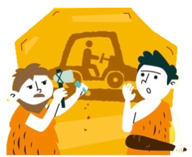
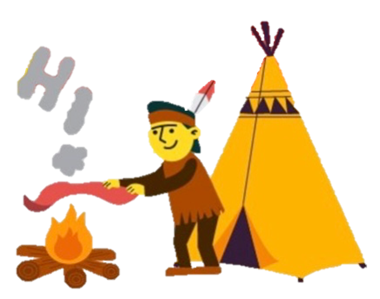
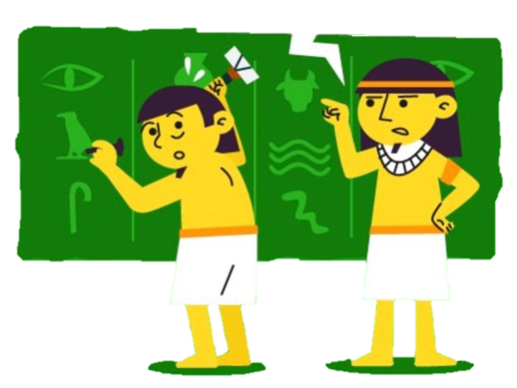
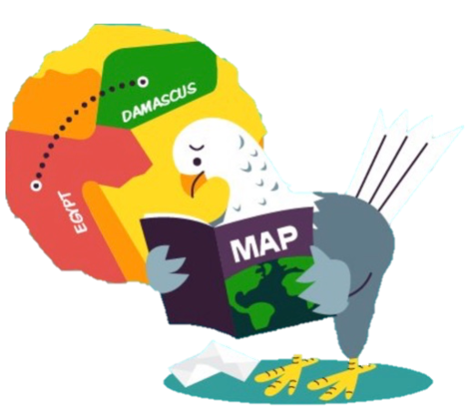
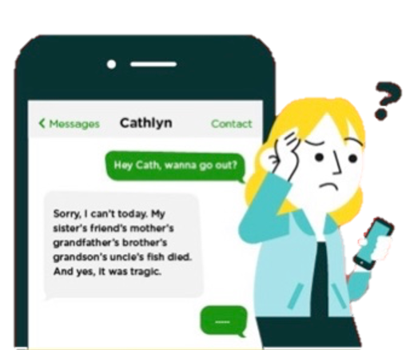

Communication is very important. It is a key to
understanding between people. Through the years,
communication has evolved. The way people communicate with each other
today is entirely different from the prehistoric era.
Technology has indeed redefined communication.
People no longer have to wait for years, months, weeks, and days to receive
an information or message. Today, texts, e-mails, tweets, and personal messages
can reach the recipient in just a matter of seconds.
Let see how communication evolved throughout the years.

B.C PICTURE BASED WRITING SYSTEMS
The earliest found form of visual communication exists in ancient cave
paintings that are dated back to 30,000 BC.Used to record pieces of history
and tell stories.
Some are known as petroglyphs :Etchings carved into a
rocky surface or stones.

SMOKE SIGNALS
Smoke signals were primarily used in sending messages in China. In 200 B.C.,
guards execute smoke signals to send messages along The Great Wall of China.
In 150 B.C., Greek Historian Polybius developed smoke signals representing the alphabet.

ALPHABETS
Were created by the Ancient Egyptians between 2700 BC and 2000 BC
They created a set of 22 hieroglyphs to represent combinations of syllables
and consonants to pronounce logograms and foreign names.

CARRIER PIGEONS
As we all know, pigeons are naturally great with directions. Over 2,000 years ago,
the ancient Romans used pigeons as primary messengers between military men. In the 12th century,
messenger pigeons were widely used. According to Naval chaplain Henry Teonge, merchants used pigeons
as a “postal” service.They also played a vital role in World Wars I and II.
TELEGRAPH
Telegraph communication started after Samuel Morse invented the Morse code which encoded the ISO
basic Latin alphabet. The Morse code transmitted messages through series of clicks, tones, and lights.
In 1830, Morse integrated the Morse code in telegraphy technology that revolutionized the
long-distance communication. In 1844, Morse sent his first telegraph message.
LANDLINES
Alexander Graham Bell patented the first phone in 1876.The first landline telephones sprung into
popularity and common use in the 1950's.
COMPUTER AND DIAL UP INTERNET
Tim Berners-Lee invented the World Wide Web in 1990.
Instantaneous wireless connection via wifi
and digital networks started to be develop in 1991.

SMS
The first SMS message was sent in1992.when Neil Papworth, an engineer from Sema Group
(now Airwide Solutions) used a computer to send “Merry Christmas” through the Vodafone network.
Now, SMS has evolved in which over 9 trillion SMS are sent every year.
SMART PHONES AND TABLETS
In the 1960's, computer used to take up entire rooms.Now devices that fit in our pockets have that power
and speed a thousand times over.
Smartphones keep us connected on so many levels including:
- Phone calls
- SMS
- Internet
SOCIAL MEDIA
The latest mode of communication in the digital era is the use of social media platforms.
It has become more available because of the proliferation of smartphones where social media apps can
easily be installed.
Tom Anderson and Mark Zuckerberg, founders of MySpace and Facebook started the
Social Media Revolution in 2003.
Website like:Facebook Twitter Instagram Pinterest
have revolutionized the way that we communication with others , record , and share our social history online.